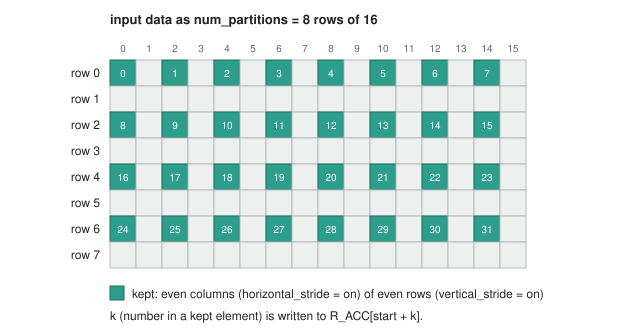
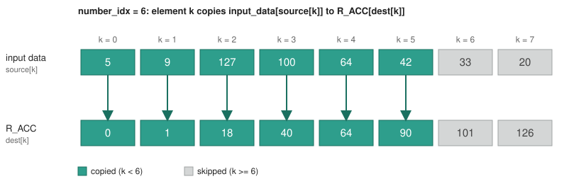

Accumulator Stage¶
1. Overview¶
The ACC (Accumulator) stage owns R_ACC, a 128-element register of 32-bit
elements, and combines each cycle's multiply result into it. It performs the
following tasks:
- Accumulate: Sets
R_ACCto the multiply result, or adds, subtracts or takes the maximum of the multiply result andR_ACC, element by element. - Stride: Reshapes the multiply result with a predetermined pattern (every
second column and/or row) into a range of
R_ACC. - Aggregate: Reduces the valid elements of the multiply result to one
value (sum or maximum) and writes it into one
R_ACCelement. - Reshape: Copies up to 8 elements of the multiply result to
R_ACC. The source and destination of each element are arbitrary. - Bypass: Sends the multiply result to the output.
R_ACCkeeps its value.
Note:
R_ACCis the stage's output to the AaQ stage every cycle, except in aBYPASScycle.
Table of Contents¶
2. Block Diagram¶
flowchart LR
IN_DATA["input data<br>128 x 32-bit"]:::io
INSTR["Instruction"]:::io
OUT_DATA["output data<br>128 x 32-bit"]:::io
subgraph STAGE["ACC Stage"]
subgraph OPS[" "]
ALU["Accumulate /<br>Aggregate"]:::blk
PERM["Stride /<br>Reshape"]:::blk
end
RACC["R_ACC<br>128 x 32-bit"]:::reg
BYP["BYPASS"]:::io
end
INSTR --> OPS
IN_DATA --> OPS
IN_DATA --> BYP
ALU <--> RACC
PERM --> RACC
RACC --> OUT_DATA
BYP ---> OUT_DATA
classDef io fill:none,stroke:none
classDef blk fill:#2e9e8c,stroke:#1a7060,color:#fff
classDef reg fill:#e6b800,stroke:#b38a00,color:#000
style STAGE fill:none,stroke:#888,stroke-width:2px
style OPS fill:none,stroke:#888,stroke-dasharray:5 53. Interfaces¶
| Name | Direction | Description |
|---|---|---|
| input data | Input | The multiply result from the MULT stage: 128 elements of 32 bits. |
| Instruction | Input | The operation that the stage does on the input data. |
| output data | Output | R_ACC, or input data: 128 elements of 32 bits, to the AaQ stage. |
3.1 Element Format¶
Each R_ACC element is an FP32 value (IEEE-754 single precision), the same as
each element of input data. It can be inf or -inf.
3.2 Running and .FIRST Variants¶
AGG.SUM and AGG.MAX each have a .FIRST variant:
| Variant | Uses the current R_ACC value |
Purpose |
|---|---|---|
Running (AGG.SUM) |
Yes | Accumulate across cycles. |
.FIRST (AGG.SUM.FIRST) |
No: the result depends on input data only |
Start a new operation. |
4. Accumulator ISA¶
The ACC slot is resolved by CTRL and forwarded down the pipeline. The stage does not read the CR/LR register files itself (see the Control Stage spec, section 3.2).
The opcode enum (acc_inst_opcode_t, package ipu_instr_pkg) is generated
from instruction_spec.py
by sv_package.py.
Instructions in this section:
| Instruction | Purpose |
|---|---|
NOP |
Do nothing. |
ACC.SET, ACC.ADD, ACC.SUB, ACC.MAX |
Set R_ACC to input data, or combine them, element by element. |
ACC.STRIDE |
Reshape input data into a range of R_ACC with a predetermined pattern. |
AGG.SUM, AGG.MAX |
Reduce input data to one R_ACC element. |
ACC.RESHAPE |
Copy chosen input data elements to chosen R_ACC elements. |
BYPASS |
Send input data to output data. |
4.1 NOP: No Operation¶
No operation for the ACC slot. R_ACC keeps its value.
Syntax¶
Operands¶
None.
Example¶
4.2 ACC.SET, ACC.ADD, ACC.SUB, ACC.MAX: Element-wise Accumulate¶
Sets each element of R_ACC to the same element of input data, or combines
them. All 128 elements are written.
Syntax¶
Operands¶
None.
Operation¶
For each element i in 0..127:
| Mnemonic | R_ACC[i] becomes |
|---|---|
ACC.SET |
input_data[i] |
ACC.ADD |
R_ACC[i] + input_data[i] |
ACC.SUB |
R_ACC[i] - input_data[i] |
ACC.MAX |
input_data[i] if input_data[i] > R_ACC[i], else R_ACC[i] |
Special cases. param1 is R_ACC[i] and param2 is input_data[i]. x
is any value that is not NaN. f is a finite value. ±inf is inf or -inf.
| Mnemonic | Case | Result |
|---|---|---|
ACC.ADD, ACC.SUB, ACC.MAX |
param1 or param2 is NaN |
NaN |
ACC.ADD |
One parameter is inf, the other is -inf |
NaN |
ACC.SUB |
param1 and param2 are the same infinity |
NaN |
ACC.ADD |
One parameter is ±inf, the other is f or the same infinity |
That infinity |
ACC.SUB |
param1 is ±inf, param2 is f or the opposite infinity |
param1 |
ACC.SUB |
param1 is f, param2 is ±inf |
-param2 |
ACC.MAX |
One parameter is inf, the other is x |
inf |
ACC.MAX |
One parameter is -inf, the other is x |
x |
Example¶
4.3 ACC.STRIDE: Accumulator Stride¶
A reshape with a predetermined pattern. It views input data as rows, keeps
every second column and/or every second row, and writes the kept elements, row
by row, into a range of R_ACC. The other R_ACC elements keep their values.
Syntax¶
Operands¶
| Name | Type | Details |
|---|---|---|
ds |
HalfCrIdx |
CR0.L-CR15.H. Supplies num_partitions (IPU ARCH 8.2): the number of rows of input data. |
horizontal_stride |
Imm |
off, on or on_inv. Column pattern. |
vertical_stride |
Imm |
off, on or on_inv. Row pattern. |
offset |
Imm |
0, 16, 32, 48, 64, 80, 96 or 112. The first written R_ACC element. |
Pattern modes:
| Mode | Columns kept (horizontal_stride) |
Rows kept (vertical_stride) |
|---|---|---|
off |
all | all |
on |
even: 0, 2, 4, ... |
even: 0, 2, 4, ... |
on_inv |
odd: 1, 3, 5, ... |
odd: 1, 3, 5, ... |
Operation¶
rows = num_partitions
elements_in_row = 128 / num_partitions
view input_data as [rows][elements_in_row] // row r = input_data[r*elements_in_row ...]
keep the columns selected by horizontal_stride
keep the rows selected by vertical_stride
kept = the kept elements, row by row // N elements
R_ACC[offset + k] = kept[k] for k in 0..N-1
The number of written elements is:
horizontal_stride |
vertical_stride |
N (num_partitions = 2, 4, 8) |
N (num_partitions = 1) |
|---|---|---|---|
off |
off |
128 | 128 |
on / on_inv |
off |
64 | 64 |
off |
on / on_inv |
64 | 128 |
on / on_inv |
on / on_inv |
32 | 64 |
offset + N is at most 128.
Example: num_partitions = 8, horizontal_stride = on,
vertical_stride = on, offset = 0. input data is 8 rows of 16. The
even columns of rows 0, 2, 4 and 6 are kept: 32 elements, written to
R_ACC[0..31].

Note: When a data structure has fewer than 8 elements, the hardware pads it to 16.
Example¶
4.4 AGG.SUM, AGG.MAX: Aggregate¶
Reduces the first valid_elements elements of input data to one value and
writes it into one R_ACC element. The other R_ACC elements keep their
values.
Syntax¶
Operands¶
| Name | Type | Details |
|---|---|---|
dest_slot |
LrIdx |
LR0-LR15. selects the written element. |
ds |
HalfCrIdx |
CR0.L-CR15.H. Supplies valid_elements (IPU ARCH 8.2). |
Operation¶
| Mnemonic | R_ACC[dest_slot] becomes |
|---|---|
AGG.SUM |
R_ACC[dest_slot] + sum(input_data[0..n-1]) |
AGG.SUM.FIRST |
sum(input_data[0..n-1]) |
AGG.MAX |
max(R_ACC[dest_slot], input_data[0..n-1]) |
AGG.MAX.FIRST |
max(input_data[0..n-1]) |
Special cases. AGG.SUM and AGG.SUM.FIRST follow the ACC.ADD special
cases. AGG.MAX and AGG.MAX.FIRST follow the ACC.MAX special cases
(section 4.2).
Example¶
4.5 ACC.RESHAPE: Reshape¶
A reshape with an arbitrary pattern: each element goes from any source index
to any destination index. It copies up to 8 elements of input data to
R_ACC. Two LRD register pairs hold the element indices: one list of 8
source indices and one list of 8 destination indices. The other R_ACC
elements keep their values.
Syntax¶
Operands¶
| Name | Type | Details |
|---|---|---|
source |
LrdIdx |
LRD0, LRD2, ..., LRD14. 8 byte indices source[0..7] into input data. |
dest |
LrdIdx |
LRD0, LRD2, ..., LRD14. 8 byte indices dest[0..7] into R_ACC. |
number_idx |
LrIdx / Imm |
An immediate 0-7, or LR0-LR15 whose value is 0-8. Elements 0..number_idx - 1 take part. |
number_idx values. number_idx is the number of copied elements.
Elements k = 0..number_idx - 1 are copied:
number_idx |
Copied k |
Skipped k |
|---|---|---|
0 |
none | 0-7 |
1 |
0 |
1-7 |
2 |
0-1 |
2-7 |
3 |
0-2 |
3-7 |
4 |
0-3 |
4-7 |
5 |
0-4 |
5-7 |
6 |
0-5 |
6-7 |
7 |
0-6 |
7 |
LRD layout. LRDn is the 64-bit pair {LR(n+1), LR(n)}. It holds 8
indices of 1 byte. Index 0 is in byte 0 of LR(n):
| Byte | Register byte | Index |
|---|---|---|
7 |
LR(n+1) byte 3 |
[7] |
6 |
LR(n+1) byte 2 |
[6] |
5 |
LR(n+1) byte 1 |
[5] |
4 |
LR(n+1) byte 0 |
[4] |
3 |
LR(n) byte 3 |
[3] |
2 |
LR(n) byte 2 |
[2] |
1 |
LR(n) byte 1 |
[1] |
0 |
LR(n) byte 0 |
[0] |
Every participating source[k] and dest[k] is 0-127.
Operation¶
When two dest[k] are equal, the higher k wins.
Example: number_idx = 6, source = 5, 9, 127, 100, 64, 42, 33, 20,
dest = 0, 1, 18, 40, 64, 90, 101, 126. Elements k = 0..5 are copied, for
example R_ACC[0] = input_data[5] and R_ACC[18] = input_data[127].
Elements k = 6, 7 are skipped. The figure has one column per k.

Example¶
4.6 BYPASS: Bypass¶
Sends input data to output data. R_ACC keeps its value.
Syntax¶
Operands¶
None.
Operation¶
Example¶
5. Disagreements with the Emulator¶
| Topic | Spec | Emulator |
|---|---|---|
ACC.SET |
Sets R_ACC to input data. |
No ACC.SET. ACC.ADD.FIRST and ACC.MAX.FIRST do this operation. |
ACC.SUB.FIRST |
No ACC.SUB.FIRST. |
R_ACC[i] becomes 0 - input_data[i]. |
BYPASS |
Sends input data to output data. |
No BYPASS. output data is always R_ACC. |
NaN element in input data |
ACC.MAX and AGG.MAX give NaN. |
ACC.MAX and AGG.MAX ignore the NaN element. |
ACC.STRIDE row size |
ds supplies num_partitions: 1, 2, 4 or 8 rows. |
The elements_in_row immediate: 16, 32 or 64 elements. No row of 128 elements. |
ACC.STRIDE offset |
An immediate: 0, 16, 32, 48, 64, 80, 96 or 112. |
LR0-LR15. The first written element is (LR value % 4) x 32: 0, 32, 64 or 96. |
ACC.RESHAPE copied elements |
number_idx: elements k = 0..number_idx - 1. |
reshape_mask: elements k = reshape_mask..7. For example, 6 copies k = 6, 7 and 0 copies all 8 elements. |